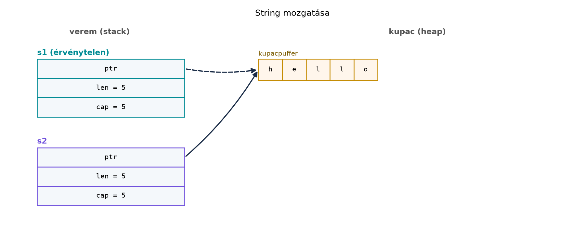

Egy C++-fejlesztő számára a mozgatási szemantika ismerős:
std::move jelzi, hogy egy objektum erőforrását elvehetjük,
a forrás pedig „érvényes, de nem meghatározott” állapotba kerül. A baj
az, hogy a C++ fordító ezt nem ellenőrzi. A std::move
valójában csak egy cast, a használat utáni hibát semmi sem akadályozza
meg:
#include <vector>
#include <string>
#include <iostream>
int main() {
std::vector<int> v1 {1, 2, 3};
std::vector<int> v2 = std::move(v1);
// v1 most „valid but unspecified” – lehet üres, lehet nem.
std::cout << v1.size() << '\n'; // lefordul, de a kimenet nem garantált
v1.push_back(4); // szintén lefordul, de logikai hiba lehet
}A Rust válasza radikális: a mozgatás itt destruktív. Ha egy értéket áthelyezünk egy másik változóba, a régi változó a továbbiakban nem használható, és ezt a borrrow checker fordítási időben garantálja. Nincs moved-from állapot, nincs dupla felszabadítás, nincs használat utáni bizonytalanság.
Definíció. A Rustban minden értéknek van egy tulajdonosa (owner): az a változó, amely az értéket birtokolja. A tulajdonos felelős az érték memóriájának felszabadításáért, amikor kilép a hatóköréből. Az érték egy másik változóhoz történő áthelyezése a tulajdonjog mozgatása (move).
Definíció. A destruktív mozgatás
azt jelenti, hogy a mozgatás során a régi tulajdonos
érvénytelenné válik. A Rust nem másolja át a
memóriaterületet, hanem bitenként átmásolja a veremben lévő adatokat
(például a String ptr, len,
cap mezőit), majd a régi változót a fordító „uninitialized”
állapotúnak tekinti. A kupacban lévő erőforrás nem duplikálódik; a régi
változó nem fut le a destruktorával.
Szabály. Az ownership három alapszabálya:
drop).Ezek a szabályok a teljes Rust memóriamodell alapját adják. Nincs
kivétel, nincs rejtett másolás, hacsak a típus explicit módon nem engedi
meg (lásd Copy a Copy, Clone és
Drop alfejezetben).
A C++-ban a mozgatás nem destruktív: a moved-from objektum továbbra is érvényes, de a pontos állapota implementációfüggő. A Rustban a mozgatás destruktív, és a fordító garantálja, hogy a régi tulajdonost nem használjuk.
Nézzünk egy konkrét párost.
C++ változat – lefordul, de veszélyes:
#include <string>
#include <iostream>
void take(std::string s) {
std::cout << "birtokba vettem: " << s << '\n';
}
int main() {
std::string s1 = "hello";
std::string s2 = std::move(s1);
std::cout << "s2: " << s2 << '\n';
std::cout << "s1: " << s1 << '\n'; // lefordul, de a tartalom nem garantált
take(std::move(s2));
// s2 itt is valid but unspecified, használható, de logikailag kérdéses
}Rust megfelelő – a mozgatott változó használata fordítási hiba:
fn take(s: String) {
println!("birtokba vettem: {s}");
}
fn main() {
let s1 = String::from("hello");
let s2 = s1; // s1 mozgatva s2-be
println!("s2: {s2}");
// println!("s1: {s1}"); // ez a sor fordítási hibát adna
take(s2);
// s2 itt már nem használható; a take utáni használat is hiba lenne
}A lényeg: a Rust megakadályozza a mozgatott változó bármilyen
használatát, még olvasást is. Ez a use of moved value
hiba.
Írjuk meg a hibás Rust kódot, és nézzük meg a fordító hibaüzenetét.
Ez a változat szándékosan nem fordul le:
fn main() {
let s1 = String::from("hello");
let s2 = s1;
println!("{s1}");
}A String nem Copy típus, ezért a
let s2 = s1; sor mozgatja a tulajdonjogot. A
println!("{s1}") sorban a fordító hibát jelez:
error[E0382]: borrow of moved value: `s1`
--> src/main.rs:4:15
|
3 | let s2 = s1;
| -- value moved here
4 | println!("{s1}");
| ^^^^ value borrowed here after move
|
= note: move occurs because `s1` has type `String`, which does not implement the `Copy` traitA hiba pontos szövege verziófüggő, de az E0382 hibakód
stabil. A javítás általában az, hogy nem használjuk a régi változót,
vagy kifejezetten klónozzuk – de ezt tudatosan tegyük, mert a másolás
költséges lehet.
A memóriaábra jól mutatja, mi történik a mozgatáskor. A
String a veremben három mezőt tárol: egy mutatót a
kupacbeli pufferre, a hosszt (len) és a kapacitást
(cap). A mozgatás ezt a három értéket bitenként átmásolja
az új változóba, a kupacpuffer nem mozdul. Ezután a régi változót a
fordító érvénytelennek tekinti.

Az ábrán a szaggatott nyíl jelzi, hogy a s1 mutatója
„érvénytelen” lett: a Rust nem nullázza ki, de a fordító tudja, hogy
s1 már nem birtokol semmit. A kupacpuffer ugyanaz marad,
nem történik allokáció vagy felszabadítás.
Ebben a laborban egy önálló kísérletet készítünk, amely bemutatja a mozgatást függvényhívásnál és visszatérésnél is.
Munkakönyvtár: ~/rust-labor/r012/
cd ~/rust-labor/r012
cargo new ownership_demo
cd ownership_demosrc/main.rs tartalmát:fn consume_and_return(s: String) -> String {
println!("len = {}", s.len());
s // visszaadjuk a tulajdonjogot
}
fn main() {
let s1 = String::from("hello");
let s2 = s1; // mozgatás
// println!("{s1}"); // E0382 lenne, ha kikommentelnénk
let s3 = consume_and_return(s2); // s2 mozgatva a függvénybe, majd vissza
println!("s3 = {s3}");
let s4 = s3.clone(); // explicit másolat; s3 továbbra is használható
println!("s3 = {s3}, s4 = {s4}");
}cargo runVárt kimenet:
len = 5
s3 = hello
s3 = hello, s4 = helloPróbáljuk ki a kommentezett println!("{s1}") sort is – a
cargo build fordítási hibát fog adni az E0382
hibakóddal.
Megfigyelések:
let s2 = s1; mozgatja a tulajdonjogot; a
s1 érvénytelenné válik.consume_and_return függvény átveszi a s2
tulajdonjogát, majd visszaadja azt s3-nak.clone() explicit, mély másolatot készít, így
s3 és s4 függetlenek lesznek.A moved-from változó használatának megkísérlése.
A C++-ban megszoktuk, hogy a moved-from objektumot lehet használni
(például újra feltölteni). Rustban ez fordítási hiba. A javítás: ne
használjuk a régi változót, vagy explicit clone() ha
másolatra van szükség.
A mozgatás és a clone()
összekeverése. Gyakori hiba, hogy minden mozgatási hibát
clone()-nal oldunk meg, amely drága lehet. Ez a „klónozás a
borrow checker legyőzésére” anti-minta. A következő fejezetekben látni
fogjuk, hogyan lehet a kölcsönzéssel többnyire elkerülni a felesleges
másolatokat.
A Copy típusok figyelmen kívül
hagyása. A skalár típusok (i32, bool,
char) és a belőlük felépülő tuple-ök Copy-k,
ezért a hozzárendelés nem mozgat, hanem másol. Ezt a Copy, Clone és Drop alfejezet tárgyalja
részletesen. Az String, Vec<T> és a
legtöbb kupacot használó típus nem Copy, így ezeknél a
mozgatás az alapértelmezett.
A destruktív mozgatás figyelmen kívül hagyása. Ne várjuk el, hogy a mozgatott változó valamilyen üres állapotban marad. A Rustnál nincs „moved-from állapot”, a változó egyszerűen nem létezik a továbbiakban.
Az alábbi kód fordítási hibát ad-e? Ha igen, miért?
fn main() {
let x = 42;
let y = x;
println!("{x} {y}");
}Adott egy C++ függvény, amely egy std::string-et vesz
át, kiírja, majd visszaadja. Írd át Rustra úgy, hogy a hívó a
visszaadott értéket használja, de a mozgatás szabályait betartja.
#include <string>
#include <iostream>
std::string process(std::string s) {
std::cout << "received: " << s << '\n';
s += "!";
return s;
}
int main() {
std::string value = "hello";
std::string result = process(std::move(value));
std::cout << "result: " << result << '\n';
}Készíts egy függvényt stats néven, amely egy
Vec<i32>-et vesz át, kiszámolja az elemek összegét és
átlagát, majd kiírja ezeket. A függvény a tulajdonjogot megtartja, tehát
nem adja vissza a vektort. A mainben hozz létre egy vektort, add át a
függvénynek, majd próbáld használni a vektort a hívás után (ez fordítási
hiba lesz). Írd meg a kommentezett sort, és magyarázd el, miért
hibás.
Az alábbi kód nem fordul le. Javítsd ki a legegyszerűbb módon, és indokold a választásodat.
fn main() {
let name = String::from("Rust");
let greeting = greet(name);
println!("{name}!");
}
fn greet(s: String) -> String {
format!("Hello, {s}")
}A kód lefordul, mert i32 Copy típus. A
let y = x; sor másolja az értéket, nem mozgatja, így
x továbbra is használható marad.
fn process(mut s: String) -> String {
println!("received: {s}");
s.push('!');
s
}
fn main() {
let value = String::from("hello");
let result = process(value); // itt mozgatás történik
println!("result: {result}");
}A C++ std::move-hoz hasonlóan itt is átadjuk a
tulajdonjogot, de a Rustban nincs szükség explicit move-ra;
a hívás alapból mozgat. A hívó a visszaadott értéket használja, így a
tulajdonjog visszakerül.
fn stats(v: Vec<i32>) {
let sum: i32 = v.iter().sum();
let avg = sum as f64 / v.len() as f64;
println!("sum = {sum}, avg = {avg}");
// v itt felszabadul, mert kilép a hatókörből
}
fn main() {
let numbers = vec![1, 2, 3, 4, 5];
stats(numbers);
// println!("{numbers:?}"); // Ez a sor E0382 hibát adna:
// value moved here
}A numbers tulajdonjogát a stats függvény
átveszi, és mivel nem adja vissza, a vektor a függvény végén
felszabadul. A kommentezett sor használata fordítási hibát adna, mert
numbers már nem birtokol semmit.
fn main() {
let name = String::from("Rust");
let greeting = greet(name.clone()); // itt explicit másolat
println!("{name}!");
println!("{greeting}");
}
fn greet(s: String) -> String {
format!("Hello, {s}")
}Vagy elhagyhatjuk a name használatát a hívás után. A
clone explicit másolatot készít, így name
megtartja tulajdonjogát, de ez felesleges költséggel járhat. A megoldás
szemlélteti a döntést: ha a hívó továbbra is szükségét érzi a régi
változónak, klónozhat, de ez nem mindig szükséges.
A Rustban minden értéknek egy tulajdonosa van, és a tulajdonjog
átadása mozgatást jelent, amely destruktív. A mozgatott változó
használata fordítási időben E0382 hibát ad, így nincs
use-after-move, double-free vagy „valid but unspecified” állapot. A
String példája megmutatja, hogy a mozgatás csak a
veremmezőket (ptr, len, cap) másolja, a kupacpuffer nem duplikálódik. A
függvényhívás és visszatérés is mozgat, a clone() pedig
explicit, mély másolatot készít. Továbbvitt eredmény:
ez a mozgatási modell alapozza meg a Copy, Clone és
Drop alfejezetben a Copy/Drop szabályait,
valamint a Referenciák és a kölcsönzési szabály
és a Closure-ök: Fn, FnMut, FnOnce és a capture
alfejezetekben a mozgatás és a capture közötti kapcsolatot.
A fejezet a Rust hivatalos dokumentációjában leírt stabil nyelvi
szabályokra támaszkodik: a The Rust Programming Language
ownership fejezete és a Rust Reference a mozgatási szemantikáról. A
megadott forráskiindulópontok (https://doc.rust-lang.org/book/,
https://doc.rust-lang.org/reference/, https://doc.rust-lang.org/std/)
hivatkozott URL-jeit ebben a kérésben nem ellenőriztem. Az
E0382 hibakód stabil, de a pontos hibaüzenet szövege
verziófüggő. A String és Vec viselkedése
stabil API, a bemutatott példák lefordíthatók a 2021-es és 2024-es
editionnel is.